제 1 장 서론
1.1 연구 배경: 글로벌 전기차 판매량 추이
<그림 1> 2022 글로벌 전기차 판매량 추이
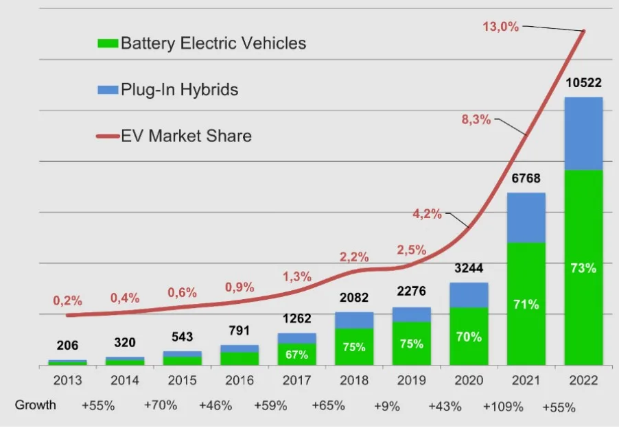
각 국의 탄소배출 규제 정책에 맞추어 글로벌 완성차 업체들은 기존 내연기관 차량판매 중심 전략에서 전기자동차 판매 중심으로의 전환을 가속화하고 있다. 이에 따라글로벌 전기자동차 시장은 매년 급격한 성장세를 보이고 있다. 2022 년 기준으로 전체자동차 판매 대수인 8,063 만 중 전기자동차 판매 대수는 1050 만대를 기록했으며전기자동차 시장은 향후 2030 년까지 연평균 성장률 17.31%에 달하는 6,937 억 달러규모로 성장이 예상된다. 2022 년 전기자동차 판매량과 내연기관 자동차의 판매량비율은 1 대 7 수준으로 2017 년 1 대 70 대비 급격한 성장을 이루며 모빌리티의전동화가 가속화되고 있다. 전 세계 전기차 시장에서 한국 시장이 차지하는 비율은중국, 유럽, 미국에 이어 국가별 시장 점유율 4 위를 기록하며 현대기아차를 중심으로내연기관 차량 중심 시장에서 전동화 차량으로의 시장 전환에 성공적으로 대응하고있다.
<출처> EV-VOLUMES
1.2 연구배경 : 주요 완성차 실적 추이
<그림 2> 주요 글로벌 완성차 판매량 순위(백만대)
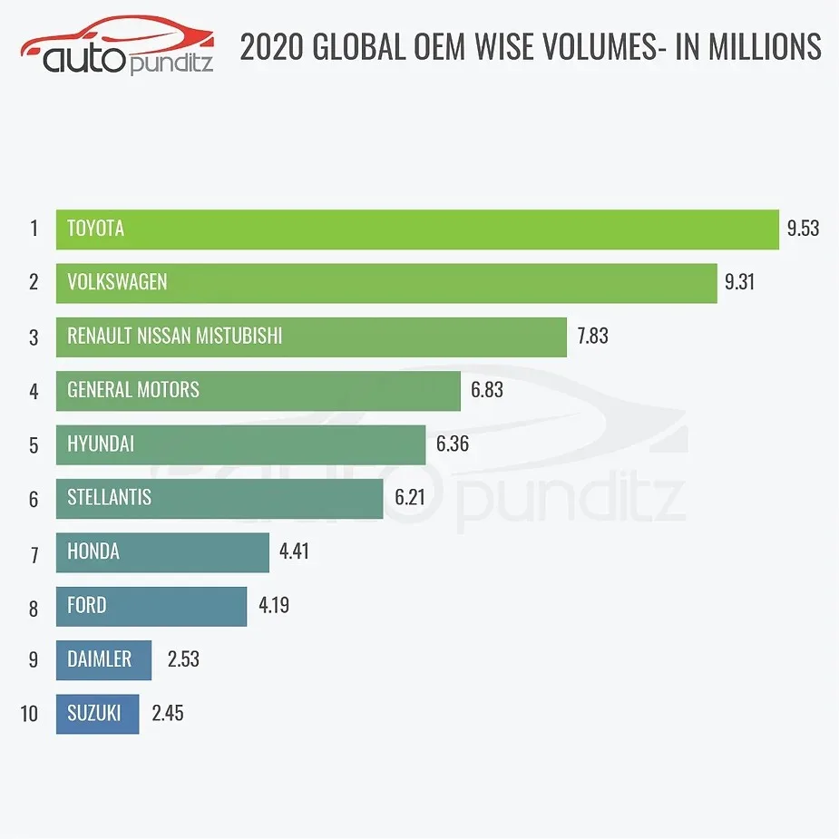
<그림 3> 주요 글로벌 완성차 매출 추이
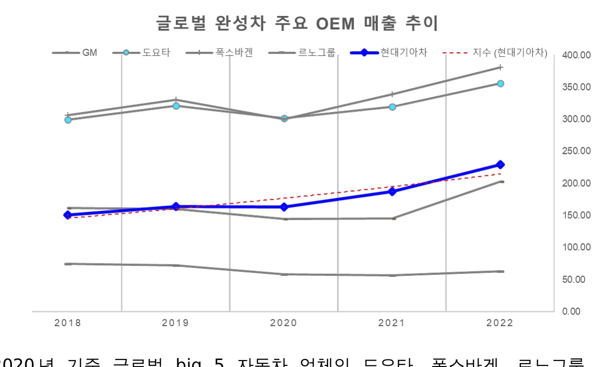
2020 년 기준 글로벌 big 5 자동차 업체인 도요타, 폭스바겐, 르노그룹, GM, 현대기아차를 기준으로 5 개년 매출 추이를 분석했을 때 2019 년과 2020 년 팬데믹시기에 주요 완성차 업체들은 매출 하락세를 기록했으나 2021 년 이후로 르노그룹을제외한 완성차 업체들의 매출 실적 회복을 확인할 수 있다. 특히 현대기아차의 경우팬데믹 시기에도 매출의 큰 변동 없이, 꾸준한 성장세를 보여주며 2022 년 기준으로글로벌 매출 3 위를 기록하며 매출의 견조한 성장세를 보여주고 있다. <출처> Global Car Sales Analysis 2020 (autopunditz.com)
<그림 4> 주요 글로벌 완성차 순이익 추이
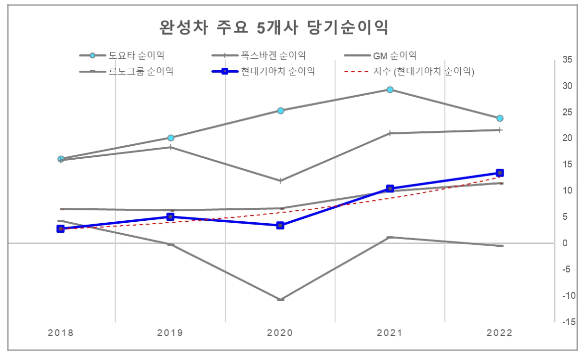
<그림 5> 주요 글로벌 완성차 주요재무 추이
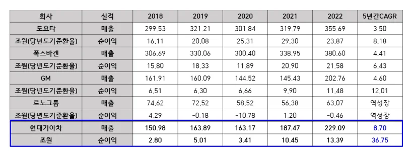
글로벌 BIG 5 주요 완성차 업체들의 5 개년 순이익 추이를 분석했을 때 현대기아차의경우 지속적인 순이익 증가 추세로 2018 년 대비 2022 년 르노그룹과 GM 을 제치고글로벌 3 위를 기록하며 매출과 순이익 부분에서 모두 3 위를 달성하며 글로벌 BIG 5 업체 중 유일하게 재무적으로 큰 폭의 성장을 이뤄냈다. 특히 5 년간 연평균 성장률을분석했을 경우 매출과 순이익의 상승률 부분에서 현대기아차의 경우 성장률 부분에서모두 1 위를 기록했으며, 특히 당기순이익 연평균 성장률의 경우 36.75%로 BIG 5 완성차 업체와 비교하여 월등히 높은 수치를 기록하고 있다.
1.3 연구배경 : 주요 완성차 전기차 판매량 추이
<그림 6> 전기자동차 판매량 순위(2016 년 – 2022 년)
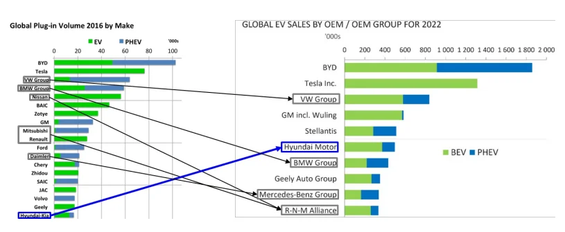
<출처> EV-VOLUMES
전기자동차 시장의 ‘First mover’인 ‘테슬라’는 ‘모델 3’의 성공을 기반으로 기존글로벌 내연기관 차량 중심 시장에서 전기자동차 중심 시장으로의 패러다임 전환을일으켰다. ‘테슬라’는 ‘22 년 131.4 만대의 전기자동차를 판매하며 전기자동차판매량을 늘려가고 있으며, ‘테슬라’의 전기자동차 성공사례를 바탕으로 글로벌 완성차업체들 또한 내연기관 차량 중심에서 전기자동차 차량 중심으로의 전환 전략을발표했다. 특히 전기자동차 기존 글로벌 완성차 시장의 강자 중 전기자동차 패러다임전환에 가장 먼저 동참한 ‘폭스바겐’은 ‘22 년 81.5 만대의 전기자동차를 판매하며 전체자동차 판매량 중 전기자동차 판매 비중을 늘려가고 있다.
글로벌 자동차 기업 중 대한민국을 대표하는 글로벌 완성차 업체인 현대자동차 또한 ‘21 년 ‘탄소중립’ 선언을 통해 내연기관 차량 판매 중심에서 전기자동차 판매중심으로의 전환 전략을 발표했다. 현대자동차는 ‘22 년 전기자동차(BEV, PHEV 합산) 판매량 기준 글로벌 6 위 수준인 51 만대의 전기자동차를 판매했다. ‘21 년 기준으로 ‘22 년 글로벌 전기자동차 판매 YoY(Year of Year) 40.9%를 기록하며 글로벌시장에서의 메인 플레이어로서 전기자동차 판매의 성장세를 이어가고 있다. 기존 완성차 시장의 주요 업체인 글로벌 BIG5(도요타, 폭스바겐, 르노그룹, GM, 현대자동차)를 기준으로 보았을 때, 폭스바겐과 현대자동차를 제외한 기존의 완성차제조 업체들은 전기자동차로의 전환 속도가 더딘 것을 확인할 수 있으며, 현대자동차의경우 폭스바겐보다 2 년 늦게 전기자동차 전환 전략을 발표했음에도 불구하고 글로벌 BIG5 중 전기자동차(BEV) 판매량 기준 2 위를 기록하며 전기자동차 전환에성공적으로 대응하고 있음을 확인할 수 있다.
<표 1> 2023 글로벌 완성차 전기차 시장 실적 (중국 제외)
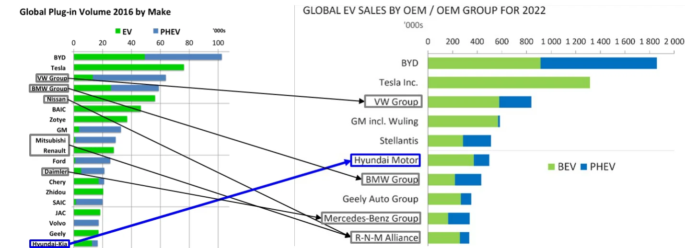

<출처> SNE 리서치
특히 현대기아차의 경우 2016 년 촉발된 중국의 사드 보복 정치 리스크로 인해전세계 자동차 시장 중 가장 큰 규모의 시장인 중국시장에서의 차량 판매량이급감했으며 중국 시장에서의 현대기아차의 전기자동차 판매가 거의 이루어지지 않고있고, 미국의 인플레이션 감축법에 의해 미국 시장에서의 전기차 판매에도 악영향을받고 있는 등 정치/지정학적 리스크에도 불구하고 ‘22 년 6 위(BEV 기준 5 위)의전기자동차 판매량이라는 높은 수치를 기록했으며 ‘23 년 8 월까지 누적 판매량 기준중국시장을 제외한 현대기아차의 전기자동차 글로벌 점유율은 10.6%로 글로벌 4 위를기록할 만큼 성공적으로 전기자동차 시장에 성공적으로 대응하고 있음을 알 수 있다. 글로벌 전기자동차 산업 경쟁에서 급격한 성장을 이룬 현대자동차의 전기자동차 전환전략을 살펴보는 것은 국가적 차원에서 해당 산업을 이해하고 국가 경쟁력 확보를 위해앞으로의 전략 방향성을 논의하는데 있어 유의미한 연구가 될 것이다.
1.4 연구 주제 선정
‘23 년 1 분기 현대자동차가 공개한 ‘해외방문 IR (J.P.Morgan Korea Conference 2023)’ 실적 현황을 살펴보면 전체 영업이익 9.82 조 중 ‘Mix 개선’의 효과로 3.01 조의수익을 얻은 것을 확인할 수 있다. ‘Mix 개선’ 대상은 마진 비율이 높은 고부가가치차종인 ‘전기자동차’, ‘SUV’ 및 현대자동차 산하 고급 자동차 브랜드인 ‘제네시스’로구성된다. ‘Mix 개선’의 한 축을 담당하고 있는 현대자동차의 전기자동차 판매 동향을살펴보면 ‘21 년 전기자동차 ‘아이오닉 5’, ‘GV60’을 연달아 공개했으며, 현대기아차전기차 라인업의 글로벌 판매 호조 ‘23 년까지 출시된 총 6 의 전기차 판매 비중이확대됨에 따라 현대자동차의 전기자동차 판매 비중은 ‘21 년 4 분기 4.3% 대비 ‘22 년 4 분기 5.7%로 증가했다. ‘현대자동차그룹’ 전체에서 보면 ‘기아자동차’의 ‘EV5’,
‘EV6’, ‘EV9’를 포함하여 ‘21 년에서 ‘23 년 3 년간 총 6 개의 전기자동차 라인업을공개한 셈인데, 이렇게 ‘현대자동차 그룹’이 전기자동차를 출시 주기를 단축할 수있었던 이유로는 현대자동차의 신규 전기자동차 플랫폼인 ‘E-GMP(Electric-Global Modular Platform)’로 설명이 가능하다.
내연기관 자동차와 전기자동차의 가장 큰 차이점은 바로 동력전환계의 변화이다. 내연기관 자동차의 ‘P/T(Powertrain)’ 시스템은 가솔린, 디젤, LPG 등 연료에너지를동력(운동에너지)으로 변환해주는 반면 전기자동차의 ‘P/E(Power Electric)’ 시스템의경우 전기에너지를 동력(운동에너지)로 변환한다. 현대자동차는 기존 내연기관자동차 플랫폼인 ‘N1’, ‘N2’, ‘N3’ 플랫폼을 개발한 경험을 바탕으로 2020 년 12 월전기자동차 플랫폼인 E-GMP 를 최초 공개했고, E-GMP 를 활용하여 다양한전기자동차를 출시 및 출시를 계획하고 있다. ‘23 년 12 월 기준 E-GMP 가 적용된차종으로는 ‘아이오닉 5’, ‘아이오닉 6’, ‘EV6’, ‘GV60’, ‘EV5’, ‘EV6’, ‘EV9’가 있으며향후 출시할 전기자동차 또한 E-GMP 가 적용될 예정이다.
본 연구에서는 내연기관 자동차에서 전기자동차로의 전환 과정에서 현대자동차가어떤 혁신 전략을 통해 단기간에 시장에서의 큰 성과를 얻을 수 있었는지에 대해분석한다. 전기자동차의 아키텍처 유형 분석 및 현대자동차의 전기자동차 개발 전략과전기자동차 시장에 다양한 라인업을 빠른 속도로 출시할 수 있었던 현대자동차의연구개발역량과 제조역량을 중심으로 핵심역량에 대한 분석을 통해 대한민국자동차산업 경쟁력에 대한 고찰 및 시사점을 도출하고자 한다.
E-GMP 의 특징과 자동차 부품 아키텍처 유형 분석에 필요한 연구 자료는 ‘ 현대자동차그룹’의 전기자동차 전환에 관여하고 있는 ‘현대자동차그룹’ 계열사의 ‘Dart’에 공시된 분기보고서 연구개발실적 및 ‘키프리스’를 이용한 특허 분석을 통해자료 수집을 진행한다. 또한, 현대자동차에서 공개한 ‘IR 자료’ 및 현대자동차의 A/S 부문을 담당하고 있는 현대모비스 홈페이지의 부품 검색 서비스를 통해 부품 아키텍처유형 분석에 필요한 자료수집을 진행한다. 수집한 증거자료를 바탕으로 얻고자 하는내용은 다음과 같다.
본 연구를 관통하는 Research Question 은 “현대자동차는 어떤 핵심 역량으로 내연기관에서 전동화 차량 시장으로 급격한 전환을 성공하였고 어떤 혁신 전략으로 타글로벌 완성차 전통 강자 대비 급격한 성장을 이룰 수 있었는가?” 이다. 현대자동차의내연 기관 차량 중심에서 전기자동차 중심으로의 전환 전략을 살펴보기 위해 아래와같은 분석을 진행한다.
첫째, 현대자동차의 완성차 제조역량을 분석하고, 현대자동차그룹의 완성차 주요핵심부품 개발역량을 비롯하여 내연기관 자동차에서 전기자동차로의 성공적 전환의발판이 되는 핵심 역량을 도출한다.
둘째, 설계 및 생산 부문간 협업 시스템을 기반으로 한 현대자동차 혼류 생산 제조방식 혁신 전략에 대해 분석한다.
셋째, ‘현대자동차그룹’에서 출시한 E-GMP 적용 차종을 대상으로 전기자동차 핵심부품에 대한 조사를 통해 핵심 부품들의 아키텍처 유형에 대한 분석 및 분류를진행한다. 또한 분석한 E-GMP 플랫폼 및 구성 부품의 아키텍처 분석을 바탕으로현대자동차의 전기 자동차 아키텍처 전략에 대해 분석한다.
넷째, 현대자동차가 고부가 가치 상품으로서 시장 경쟁력을 향상시키기 위한수단으로 활용한 디자인 혁신 전략에 대해 분석한다.
제 2 장 현대자동차 핵심 역량 분석
2.1 핵심 역량 (1) 제조-설계간 협업 프로세스 기반의 독보적 제조 역량
완성차 제조업체의 역량은 차량의 연구개발 역량과 더불어 제조역량이 요구된다. 그중에서도 현대자동차의 경우 ‘선행생산기술센터’라는 현대자동차에 특화된 연구소 내제조부문 조직을 보유하고 있으며, 선행생산기술센터를 통해 전 현대기아차의 글로벌완성차 주요 생산 거점의 생산 조건에 부합하는 차량의 최적 생산 구조를 반영한 구조의차량 플랫폼 개발이 가능하다. 또한 현대자동차의 경우 내연기관 차량부터 전동화차량까지 주요 핵심 부품을 개발할 수 있는 계열사를 수직계열화 하여 보유하고 있으며해당 계열사들을 통해 전동화 차량 동력계 핵심 부품인 모터, 인버터, 감속기, 통합충전제어장치, BMS 시스템 등의 개발이 가능하다.
<그림 7> 차종 개발 연구개발-제조부문 간 협업 체계
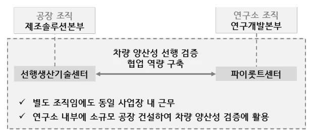
현대자동차의 경우 글로벌 공장을 직접 담당하는 조직인 생산기술개발 조직과 차량의연구개발조직 사이의 중추적 역할을 담당하는 선행생산기술 조직을 통해 차량의플랫폼 개발부터 제조까지 조직 간 유연한 협업 네트워크를 구축했으며, 이러한네트워크를 바탕으로 국내 공장뿐만 아니라 글로벌 생산 공장에서도 다양한 차종의동일 공장 내 생산인 혼류 생산을 위한 차량의 최적화 구조의 반영이 가능하다. 타사대비 연구개발조직과 제조솔루션 조직의 간의 협업 네트워크라는 강점을 가지고 있는것이다. 이런 협업 시스템을 통해 설계 단계에서 미리 “차량 양산성” 및 “생산 효율성” 검증 가능한 조직과 프로세스를 구축하여 차량 개발 초기 단계에서 향후 양산 시 발생가능한 생산성 이슈 즉각 발견 및 개선 가능하다는 강점을 가진다.
2.2 핵심 역량 (2) 그룹사 차원의 주요 전동화 부품 자체 설계 및 개발 역량
<그림 8> 핵심 부품 및 시스템 현대자동차그룹 내 자체 개발
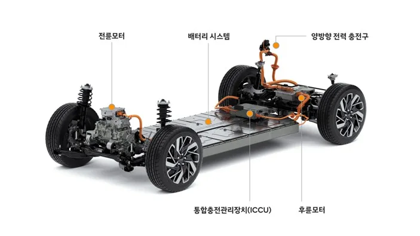
현대자동차의 경우, 수직계열화된 형태의 그룹 계열사인 현대모비스, 현대트랜시스, 현대위아 등의 핵심부품 연구개발 역량과 핵심부품 제조 역량을 기반으로 자동차 주요부품의 밸류체인과 공급망이 잘 구축되어 있는 케이스라고 평가할 수 있다. 사실상현대자동차는 경쟁사와 비교하여 수직계열화된 전동화 차량 핵심 부품사의 역량을포함한 유일한 글로벌 완성차 업체라고 볼 수 있다. 전동화 차량에 필요한 주요기술들은 특허로 출원되고 있으며 현대기아자동차와 현대모비스, 현대트랜시스, 현대위아를 중심으로 유기적인 기술 네트워크가 이루어지고 있음을 확인할 수 있다. 내연기관 차량 부품 개발 역량 바탕으로 전동화 차량의 성능 및 기능적 요구 사항에대해서도 계열사 별 전문적인 R&D 역량을 기반으로 시장 요구 수준에 부합하는 부품연구 개발을 동시 다발적으로 추진하며 단기간 부품 개발 대응을 추진할 수 있었다. 이를 실증하기 위하여 위즈도메인에서 현대자동차 그룹의 전동화 특허를 기준으로특허 네트워크 분석하였다. 그 결과 전동화 차량의 동력계 주요 부품인 E-GMP 모터, 효율적인 전비를 위한 전기차 감속기, 미래 모빌리티에 적용될 인휠모터, 배터리시스템과 전기제어 시스템 등 현대자동차의 전기자동차에 필요한 핵심기술들이 특허로 등록되고 있으며, 아직 등록번호가 나오지 않은 특허들도 수백 건에이를 만큼 기존 내연기관 차량 중심의 부품을 개발하던 부품사들의 전동화 차량부품으로의 전환이 가속화되고 있는 것을 확인할 수 있다. 특히 그룹사 간의 인용/ 피인용이 활발하게 이루어지고 있으며 각 그룹사가 보유하고 있는 도메인 지식을기반으로 미래 전기자동차 역량 확보에 필요한 핵심 기술에 대한 특허들이 출원되고있다. 이는 글로벌 완성차 업체 중 자동차 주요 부품사를 수직계열화한 현대자동차만의유일한 연구개발역량이라고 볼 수 있다.
<그림 9> 전기차 관련 핵심 특허 현대차그룹 내 보유 현황
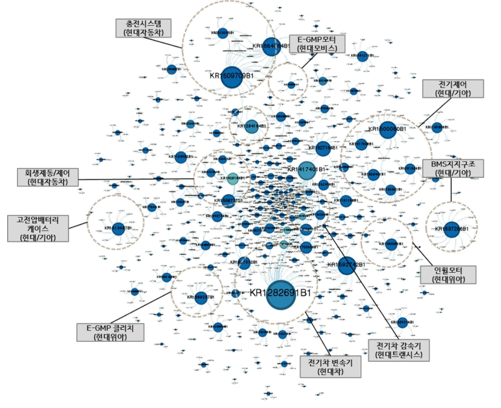
<출처> WISDOMAIN 기반 특허 분석(Gephi)
2.3 핵심 역량 (3) 글로벌 최고 수준의 완성차 디자인 역량
자동차의 가장 주요한 구매 요인 중 하나로 디자인을 꼽을 수 있다. 현대자동차는글로벌 자동차 시장에서 강력한 입지를 확보하기 위해 글로벌 완성차 업계 최고 경력의디자이너들을 지속 영입하고 있다. 이를 통해 차량의 디자인 역량을 한 단계 높이는 데중점을 두고 있으며, 내/외관 디자인의 방향성을 혁신적으로 개선하고 있다. 피터 슈라이어를 포함하여 현대자동차가 신규로 영입한 디자이너들은 리더의자리에서 차량의 디자인 방향성을 결정하는 데 있어서 창의적이고 혁신적인방향으로의 접근을 채택하였다. 이는 차량의 디자인이 소비자들에게 더욱 강력한인상을 심어주며, 브랜드의 이미지를 향상시키는 중요한 역할을 한다. 새로운 디자인트렌드와 시각적 표현 방식을 탐색하며, 현대자동차는 차량의 내/외관 디자인에서차별화된 요소를 창출하고 있다.
제 3 장 혁신전략 1. 제조 방식의 혁신: 혼류 생산 전략
3.1 혁신 배경
전동화 초기에는 제조사별로 내연 기관 차량 플랫폼 기반의 전동화 차량 레이아웃을구성하였다. 기존 내연기관 차량 생산 라인에서의 제조를 고려하여 구동 축 및 배기부품이 배터리를 관통해야 하는 구조로 전기차 레이아웃이 구성되었다. 따라서배터리가 뒤쪽 플로어 부 혹은 중앙 터널부에 장착되는 형태로 구성되었다. 하지만이러한 초기 전기차 레이아웃은 중앙부 부품들이 승객 탑승 공간을 침범하였기 때문에고객 편의성이 크게 저하되는 문제를 유발했다.
<그림 10> 도미넌트 이전 전기자동차 P/E 시스템
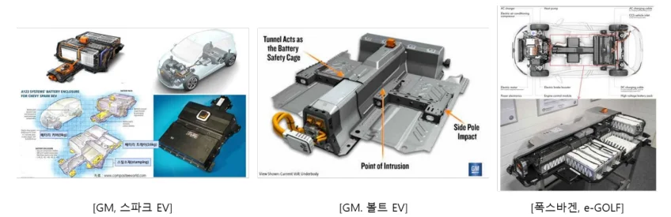
<출처> GM, 폭스바겐 기업 홈페이지 자료 참고
이와 같은 상황에서, 전기차 전용 E-GMP 플랫폼이 도입되었다. 현재 전기차의 주요플랫폼 디자인은 하부에 배터리를 탑재하고, 후륜 구동 모터를 장착하는 방식으로설계되어 활용되고 있다. 현재 제조사별 전기차 플랫폼 디자인은 내연 기관 차량과구조적으로 차별화되며, 배터리를 하부에 탑재함으로써 차량의 중심 무게를 낮추고안정성을 향상시키는 동시에, 후륜 구동 모터를 적용함으로써 전동화 차량이 가진 주행성능과 효율성을 높일 수 있게 되었다.
전기자동차 산업의 ‘First Mover’라고 할 수 있는 ‘테슬라’의 성공 이후 글로벌 완성차기업들은 전기자동차 개발에 착수했는데, 전기자동차 전환 초기 ‘폭스바겐’, ‘GM’, 현대자동차의 경우 기존 내연기관 차량의 차체 및 구성 부품의 변경 및 개조를 통해전기자동차를 개발을 진행했다. 전기자동차 개발 초기에는 내연기관 차량의 부품을개조하여 개발되었기 때문에 초기의 전기자동차들은 ‘Integral’ 아키텍처 유형으로설계됐다. 따라서 전기자동차 플랫폼 이전 개발된 전기자동차 부품 레이아웃의 경우통일성이 없는 것을 확인할 수 있다.
<그림 11> 도미넌트 디자인을 선택한 전기자동차 플랫폼
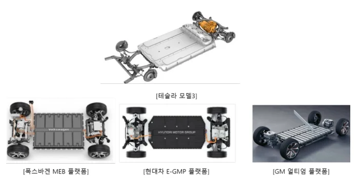
<출처> 테슬라, GM, 폭스바겐, 현대자동차 기업 홈페이지 자료 참고 ‘테슬라’는 전기자동차 플랫폼의 도미넌트 디자인을 제시했다. 현대자동차의전기자동차 플랫폼인 E-GMP 플랫폼과 ‘폭스바겐’의 ‘MEB’ 플랫폼, ‘GM’의 ‘얼티엄’ 플랫폼 등 전기자동차 구성 부품의 레이아웃을 살펴보면 하부 센터부에 전기자동차에필요한 에너지 저장을 위한 전기자동차 배터리가 장착되어 차량의 무게 중심을낮추었고, 승차감 개선을 위해 전기모터가 후륜 부위에 배치되었는데 이는 ‘테슬라’의전기자동차 구성 부품 레이아웃과 흡사하다.
그러나 이로 인해 혼류 생산이 어려워지는 문제가 발생하게 되었다. 즉, 초기에는내연 기관과 전동화 차량의 레이아웃 차이로 차량 생산성이 저하되었고, 이를 해결하기위한 플랫폼 변경이 새로운 어려움을 야기하게 되었다. 내연기관 차량과 전동화 차량은동력계통의 부품이 상이하고, 부품을 탑재할 차량의 언더바디 구조가 상이하기 때문에동일 공장 내 혼류 생산 어렵다. 또한 동일 라인 생산을 위해서는 공장 개조의 난이도가높으며 공장 개조를 위한 투자비가 과다하게 발생하기 때문에 주요 완성차 업체들은수조원을 들여 전기자동차 전용 공장을 신설하는 전략을 펼치고 있다. 하지만현대자동차의 경우 E-GMP 기반의 모든 전기자동차(총 6 종)를 기존 공장에 혼류 생산방식으로 내연기관 차량과 동시에 생산하는 시스템을 구축했다. 현대자동차의 첫번째혁신 전략으로서의 내연기관-전동화 차량 혼류 생산 전략을 분석하였다.
<그림 12> 내연기관 차량과 전동화 차량의 동력계통 시스템
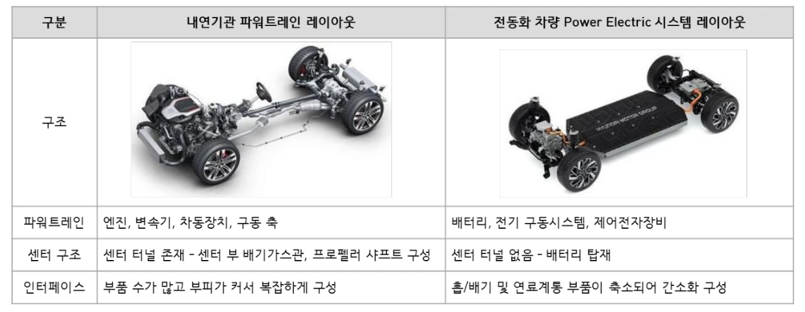
3.2 혁신 전략: “선행생산기술” 조직 기반 제조-설계 간 협업을 통한 혼류 생산
현대자동차는 2020 년 전기자동차 플랫폼인 E-GMP 를 발표하며 기존 내연기관차량에서 전동화 차량으로의 전환을 발표했다. 하지만, 전기자동차와 내연기관자동차의 경우 앞서 언급하였듯이 동력계통 부품을 포함해 차량의 전체적인 구조가상이하므로 동일한 공장 내에서 전기차와 내연기관 차량을 동시에 생산하는 것은상당한 난이도의 공정이다. 추가로 현대자동차의 경우 E-GMP 라는 전기자동차 통합플랫폼을 활용하기 때문에 E-GMP 를 생산할 공장의 생산 조건을 E-GMP 플랫폼의설계 조건에 녹여내야 하기 때문에, 연구개발조직과 제조솔루션 조직과의 유기적인협업이 요구되었다.
현대자동차의 경우 이를 해결하기 위하여, 선행생기센터 조직을 만들어 연구개발조직과 제조솔루션 조직과의 유기적인 네트워크를 구축하였다. 선행생산기술조직에게 차량 혼류 생산을 위한 관제탑으로서의 역할을 부여하고 이를 강화하는전략을 펼쳤다. 내연기관 차량에서 전기차로 전체적인 라인업을 확대하며 신차를생산하기 위해 라인을 바꾸거나, 한 라인에서 여러 차종을 생산하는 '다차종 혼류 생산' 시스템을 개발하는 업무의 중요도 및 미션을 강화하였다.
상세히 설명하자면, 선행생산기술센터를 제조 협업 관제탑으로써 역할을 부여하여구조와 부품이 다른 내연기관 차량과 전동화 차량의 설계 컨셉 최적화로 혼류 생산바탕을 구축하였고, 제조 부문 검토 의견 기반으로 기존 공장 최적 범위 개조 방안 등을검토하고 있다. 예시로 E-GMP 플랫폼 생산 거점의 생산 조건을 E-GMP 에 사전반영하고, 공장 개조의 최소화, 최적화 검토를 사전에 진행하고 있다.
<표 2> 현대자동차의 공장 별 혼류 생산 전략
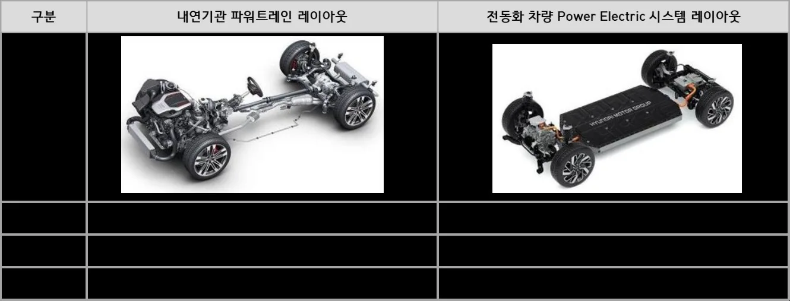
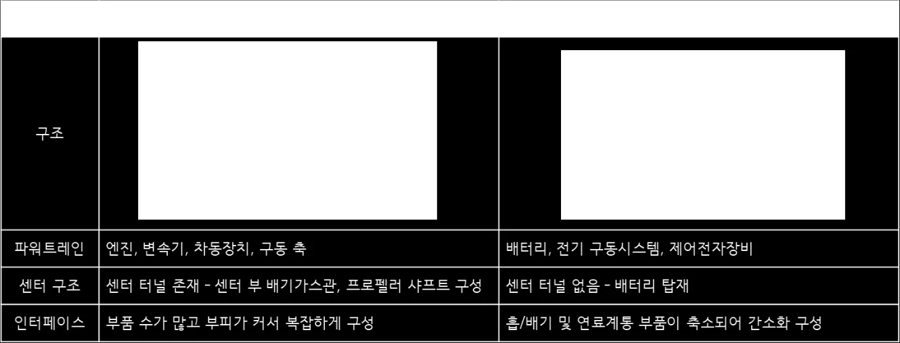
<그림 13> 현대자동차의 공장 별 혼류 생산
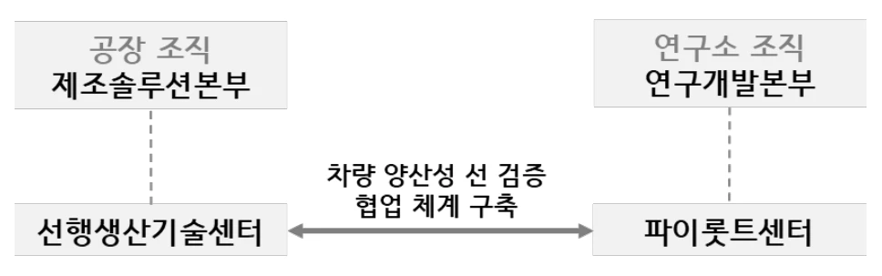
상기의 공장별 생산 차종 현황에서 볼 수 있듯이 현대자동차의 경우 E-GMP 차량을포함한 내연기관의 구조를 개조한 전기자동차를 모두 기존 공장의 최소 개조 및 공장최적화를 통한 혼류 생산 방식을 활용한다. 이는 연구개발 조직과 제조솔루션 조직의유기적인 소통의 결과물이라고 할 수 있으며, 현대자동차의 특징적인 조직인선행생기센터 조직 역량이 발휘된 결과라고 할 수 있다.
3.3 혁신 결과
3.3.1 경쟁사 대비 최단 기간 최다 라인업 개발 및 생산 - 3 년간 6 종
현대기아차는 혼류 생산 전략을 활용하여 기존의 내연기관 차량 생산 공장을소규모로 개조하는 방식으로, 동일한 공장 내에서 서로 다른 플랫폼을 가진 차량라인업을 효과적으로 생산하고 있다. 이로써 생산 라인의 다양성을 확보하면서도 기존생산 시설을 완전히 새로이 구축할 필요 없이 내연기관과 전동화 차량을 공동으로제조할 수 있는 유연성을 대폭 증대하였다.
이런 혁신 전략의 결과로 현대기아차는 근 3 년 간 글로벌 자동차 주요 경쟁사들과비교했을 때 가장 많은 전동화 차량 신규 라인업을 성공적으로 출시하고 있다. 신차출시에 소요되는 리드 타임 단축과 높은 생산 효율성은 현대기아차의 글로벌시장에서의 경쟁력을 높이고, 다양한 전동화 모델을 통해 미래 모빌리티 시장에서주도적인 역할을 수행하고 있다.
<표 3> 주요 완성차 라인업 출시 현황
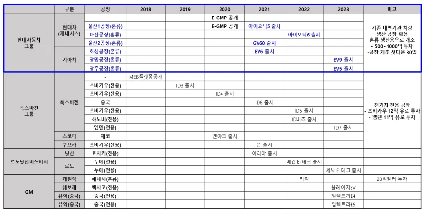
또한 혼류 생산 전략을 통해 현대자동차는 글로벌 경쟁사들과 비교했을 때 전기차생산을 위한 신규 공장 구축 비용 및 소요 기간을 대폭 축소하고 있다. 혁신적인 혼류생산 방식은 제조 부문의 의견을 기반으로 기존 운영 중인 공장을 최적 범위로 개조하는방식으로 추진되며, 예시로 한 달 미만의 기간 동안 생산 공정을 완료하는 등 신규 공장구축에 비해 훨씬 효율적인 방식으로 생산 환경을 조성하고 있다. 이로 인해 생산라인의 신속한 전환을 이루고 있다.
3.3.2. 신규 공장 구축 및 개조 비용 및 기간 최소화로 생산 원가 대폭 절감
또한, 현대자동차는 신규 차량에 맞춰 적합한 생산 설비를 구축하는 데 필요한비용이 경쟁사 대비 약 10% 수준으로 절감되고 있다. 이는 차량 생산 원가를 크게절감하는 결과를 가져온다. 따라서 차량의 총 개발 양산 기간과 투자 원가 절감은시장에서의 경쟁력 향상을 지원하고 있으며 이 혁신적인 생산 방식은 현대자동차가전동화 차량 시장에 성공적으로 대응할 수 있게 만들어준 원동력이라 할 수 있다.
<표 4> 현대자동차와 폭스바겐의 전기자동차 제조 전략
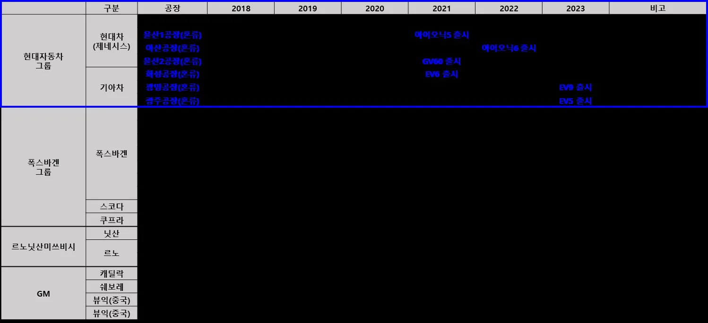
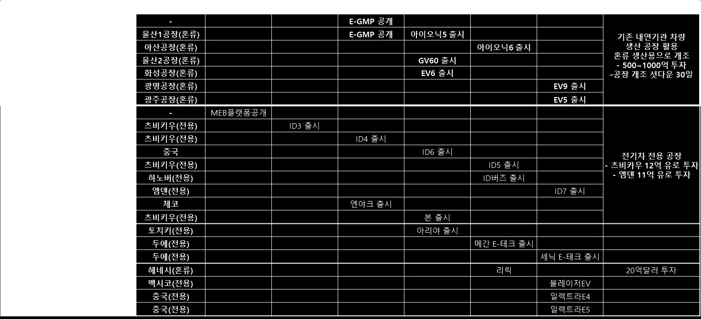
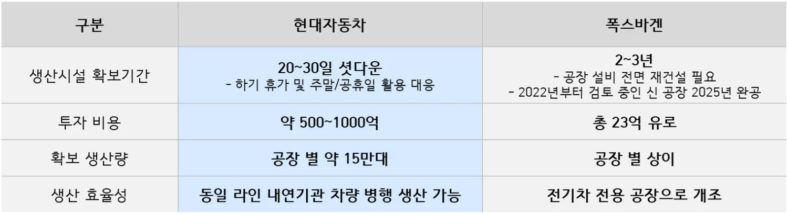
3.3.3. 공장 별 전기차 생산 비율 자체 조절로 글로벌 시장 수요 최적 대응
혼류 생산 전략을 통해 현대자동차는 시장의 수요 변화에 따라 맞춤형 생산 전환비율을 조정하여 판매량의 유연한 대응을 할 수 있도록 하는 바탕을 구축하였다. 지역별 전기차(EV) 판매 예상 물량을 고려하여 전동화 전환 생산을 유연하게 대처할 수있는 전략을 확보하게 되었다. 예를 들어, 한국을 기준으로 2023 년에는 전체 판매량의 14%가 전기차로 예상되었지만, 2030 년에는 이 비율이 36%로 증가할 것으로예상하고 있는데 현대자동차의 경우에는 신규 공장을 짓지 않고 혼류 생산 시스템을통해 전기차 생산 확대에 유연하게 대처 가능하다.
추가적으로 현대자동차는 혼류 생산 및 쉬운 전동화 생산 전환으로 시장 수요에 맞춘내연기관 자동차와 전기자동차의 유연한 생산 비율 조정을 통해 공장의 효율적인운영이 가능하며 현재의 계획으로 현대자동차는 2030 년 전체 자동차 생산량 중 34% 에 달하는 200 만대의 전기자동차를 생산할 수 있는 제조 역량을 보유하게 된다. 이는 2023 년에 비해 약 6 배로 생산 가능한 규모이다.
결과적으로 현대자동차는 혼류 생산 전략을 통해 시장의 수요 변화에 신속하게대응함으로써, 수요 예측에 따른 맞춤형 생산 전환을 가능하도록 하고 있으며 수요대응 외에도 재고 관리 비용을 절감할 수 있는 강점을 가지게 되었다. 전기자동차와내연기관 차량의 혼류 생산은 공장의 효율성 증가와 차량 재고 관리 등 기업 운영에있어 효율적인 방식이라고 볼 수 있으며, 현대기아자동차의 전기자동차 전환의 주요전략이라고 볼 수 있다.
<그림 14> 지역별 EV 생산 설비 보유 현황 및 EV 생산 비중
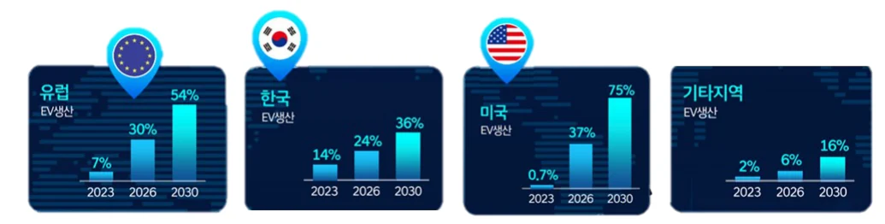
<그림 15> 전동화에 따른 맞춤형 생산 비율 조정 전망
출처: 현대자동차 2023 IR 자료
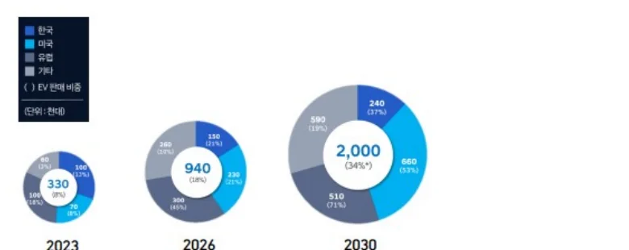
제 4 장 혁신전략 2. 제품 아키텍처 혁신: 모듈러 아키텍처 전략
4.1 이론적 배경: 아키텍처 이론
<표 5> 아키텍처 이론 타입 별 설명
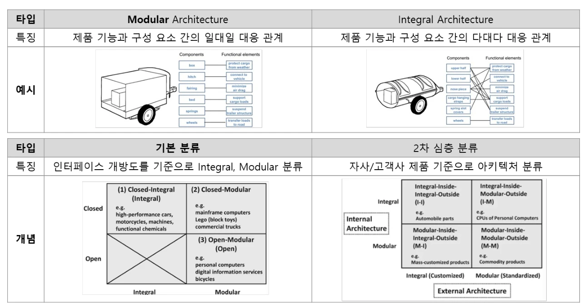
<출처> (위) K. Ulrich(1995): “The Role of Product Architecture in the Manufacturing Firm”, Research Policy, 24, pp.419-440 (아래) A Design-Information-Flow View of Industries, Firms, and Sites, 2018, 후지모토
제품 아키텍처란 제품에 요구되는 기능을 각 구조(부품)에 어떻게 배분하고, 부품 간인터페이스를 어떻게 디자인할지에 관한 기본 설계 사상을 이야기한다. 제품의 기능설계는 제품의 메인 기능을 구성하는 서브 기능(Sub Functions)으로 제품의 기능전개가 이루어지게 된다. 최종 제품 설계를 위해서는 제품의 구조 설계(구조 전개)가이루어지는데 서브 기능에 해당하는 부품들은 요구 기능을 만족하기 위해 설계되며
메인 기능 구현을 위해 제품에 조립 및 장착된다. 또한 물리적 구조 요소(구성 부품) 장착을 위해서는 연결 부분(Interface) 설계도 동시에 이루어지게 된다. 제품 아키텍처이론은 제품 메인 기능을 구현하기 위한 요구 기능 및 성능 별 부품들의 조합과 이를연결할 인터페이스를 설명한다. 또한 같은 기능일지라도 상품적 측면에서 차별화된요구 성능에 대응하기 위한 부품의 다양화 및 이에 따른 제품 성능의 차등화를설명하기에 용이하다.
현대자동차의 경우 기존 내연기관 자동차 플랫폼 개발 경험을 바탕으로 고유의전기자동차 플랫폼인 E-GMP 를 개발했는데, P/E 시스템의 메인 기능인 ‘전기에너지의운동에너지 전환’에 필요한 ‘에너지 저장’, ‘에너지원 동력 변환’, ‘동력 전달’ 등의 서브기능 전개와 각 서브 기능에 필요한 배터리, ‘전기 모터’, ‘감속기’, ‘인버터’ 등 P/E 시스템 부품의 구조 전개를 설명하기에 적합한 이론이 제품 아키텍처 이론이다. 본 연구에서는 현대자동차가 다양한 차종의 전기자동차 출시와 더불어 자동차의성능 지표인 출력(HP), 토크(Kg.m), 후륜구동, 4 륜구동 등의 전기자동차의 상품적측면에서의 다양화를 위해 어떠한 아키텍처 전략을 추구하고 있는지에 대해 제품아키텍처 이론으로 분석한다.
<그림 16> 제품 아키텍처 이론의 개념
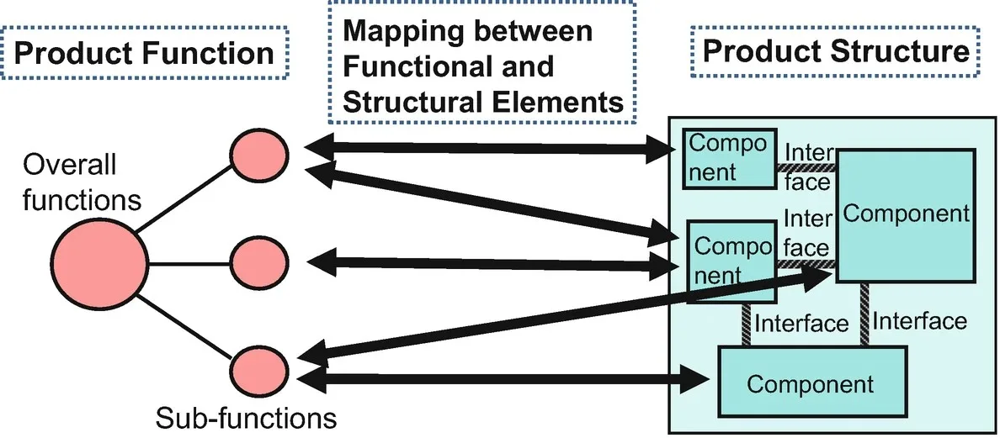
<출처> A Design-Information-Flow View of Industries, Firms, and Sites, 2018, 후지모토제품 아키텍처의 경우 기능과 구성 요소 간의 대응 관계에 따라 제품 기능과 구성요소(부품)이 다대다 대응 관계일 경우 ‘Integral Architecture’로 분류하며 일대일대응관계일 경우 ‘Modular Architecture’로 분류한다. 또한 한 기업 내에서만 부품설계가 가능한 부품은 Closed Architecture, 기업 간 부품 설계가 가능한 부품은 Open Architecture 로 분류한다. 제품 아키텍처 분류에 따라 ‘Closed Integral’ 아키텍처의 경우 한 기업 내에서만 사용되는 제품이며 기능과 구성 요소가 다대다 대응
관계인 아키텍처 유형이며 ‘Closed Modular’ 아키텍처의 경우 한 기업 내에서 제품기능과 구성 요소가 일대일 대응 관계인 아키텍처 유형이다. ‘Closed Modular’ 아키텍처 유형의 부품들은 기능과 부품이 일대일 대응 관계에 있기 때문에 모듈 부품을장착할 수 있는 ‘Interface’가 설계되어 있고, 해당 기업 내의 제품에서 요구하는부품의 기능이 같다면 그 기업내의 다른 제품에도 해당 부품의 공용화가 가능하다. 자동차 산업은 차종마다 디자인된 고유의 특징 및 성능을 만족하기 위해 통합적 관점의설계가 필요한 대표적인 ‘Integral’한 아키텍처 유형을 가지고 있는 산업이지만현대자동차, ‘폭스바겐’, ‘도요타’ 등 글로벌 완성차 업체들은 이미 내연기관 차량플랫폼 개발과 핵심 부품들의 모듈화를 통해 설계 비용 절감, 개발 기간 단축, 제조 비용절감 등을 위한 전략을 실행했다.
본 연구에서는 현대자동차에서 판매하고 있는 전기자동차의 핵심이라고 할 수 있는 P/E 시스템 구성 부품의 제품 아키텍처 분류 및 고부가가치 형성을 위해 필요한 차종고유의 상품성을 만족시키는 디자인류 부품들의 제품 아키텍처 분류를 통해현대자동차의 전기자동차 개발 전략에 대한 분석을 진행한다.
<그림 17> 제품 아키텍처 분류 이론 설명
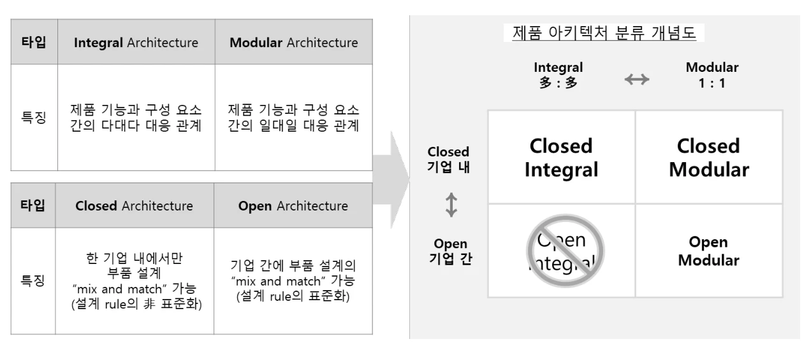
<출처> A Design-Information-Flow View of Industries, Firms, and Sites, 2018, 후지모토 재구성
4.2 혁신 배경: 동력계 핵심 부품 변화로 “다수의 핵심 부품” 신규 개발 필요성 대두
내연기관에서 전동화 차량으로의 전환으로 인해 여러 핵심 동력 계통 부품들의 신규개발 챌린지가 발생하고 있다. 이 혁신적인 전환의 핵심은 내연기관 차량에서 전동화차량으로의 전환에 따라 에너지원의 변환에 집중되고 있으며 이로 인해 다양한 동력전달 시스템의 핵심 부품들이 새로운 패러다임에 맞게 발전해야 하는 필요성이대두되고 있다.
내연기관의 전통적인 동력 계통과는 다르게, 전동화 차량에서는 에너지원을전기에너지로 변환하고, 이를 운동에너지로 효율적으로 전달하는 POWER ELECTRIC SYSTEM(P/E)이 중요한 역할을 하고 있다. 그리고 이러한 새로운 동력 계통의중심에서, 다수의 핵심 부품들이 이전과는 다른 형태와 성능이 요구된다. 완성차제조사의 입장에서는 전동화 차량은 전통적인 내연기관 차량과는 다른 동력전달시스템을 채택하고 있기 때문에, 전동화에 최적화된 부품들의 신규 개발이 필수적이되었다. 에너지의 효율적인 전환과 동력의 효과적인 전달을 위해서는 POWER ELECTRIC SYSTEM 의 핵심 부품들이 새로운 기술과 혁신적인 디자인을 통해발전해야 하며 이는 모두 새로운 막대한 투자비용의 소요와 개발 기간을 요구한다.
<표 6> 내연기관 대비 전동화 차량 파워 시스템 변화
출처: 직접 작성
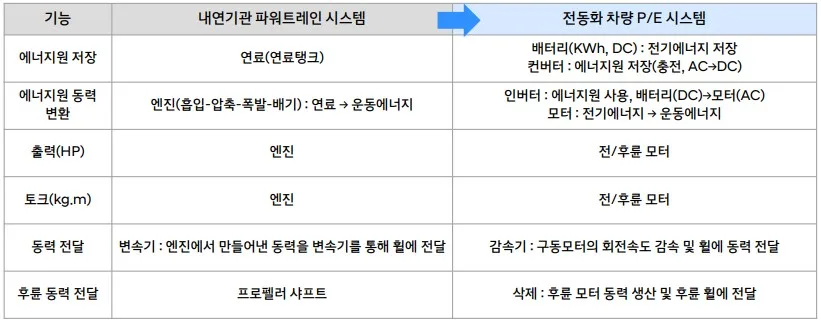
4.3 혁신 전략 1: 전기차 전용 모듈형 플랫폼 E-GMP 구축
<그림 18> E-GMP 플랫폼 개발 이전 현대자동차 초기 전기자동차 모델 P/E 시스템
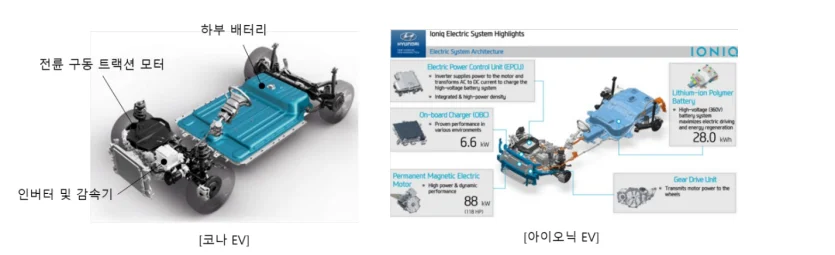
<출처> 현대자동차 상품 설명 자료 참고
현대자동차는 E-GMP 의 개발 이전 소나타(이하 N3)의 개발에 있어서 모듈화 된
제품 아키텍처 플랫폼을 구축하는 것에 성공한 경험이 있다. 그리고 N3 플랫폼 구축에성공한 경험을 바탕으로 전기자동차 플랫폼 구축(E-GMP)을 진행하였다.
<그림 19> N3 플랫폼과 E-GMP 전동화 플랫폼 인터페이스 비교
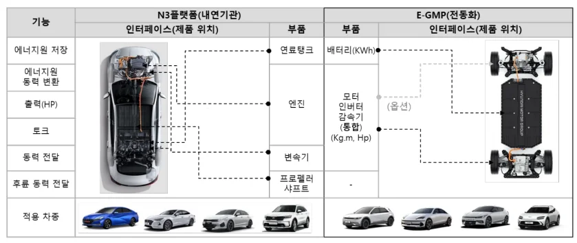
<출처> 현대자동차 차량 설명 자료 기반 직접 작성
위의 그림에서 볼 수 있듯이, 각 기능 별 부품의 레이아웃을 확인해보면 내연기관 N3 플랫폼에서 전동화 E-GMP 플랫폼으로 전환되며 부품 별 기능이 통합되어 더욱단순화된 모듈형 인터페이스 구조를 가지고 있음을 확인할 수 있다. 이를 위해서현대자동차는 E-GMP 플랫폼의 차급 별 디자인의 대응을 위해 모듈 구조를 ‘고정 영역’ 및 ‘변동 영역’으로 구분한 형태의 아키텍처 구성으로 E-GMP 를 개발했다. 고정 영역 부품의 경우 E-GMP 가 적용된 차종에서 공용화 되어 사용되고 있기 때문에 ‘Closed Modular’ 아키텍처 특성을 가지고 있는 반면, 변동 영역의 경우 차종 별디자인, 그리고 휠 베이스의 길이에 따라 변경되는 부품으로 ‘Closed Integral’한아키텍처 유형을 가지고 있음을 알 수 있다. 현대자동차에서 공개한 ‘E-GMP 의 모듈화특성’을 보면, ‘Closed Integral’ 아키텍처 유형에 속하는 변동 영역의 차종 별통합적인 설계를 통해 중형 세단에 속하는 ‘아이오닉 6’ 및 준 준형 SUV 에 속하는 ‘ 아이오닉 5’, ‘GV60’, ‘EV6’ 등 다양한 차급 및 디자인에 E-GMP 가 활용되고 있다는점을 미루어 보았을 때, E-GMP 의 확장성을 짐작할 수 있다.
<그림 20> E-GMP 등장 이전, 이후의 P/E 시스템
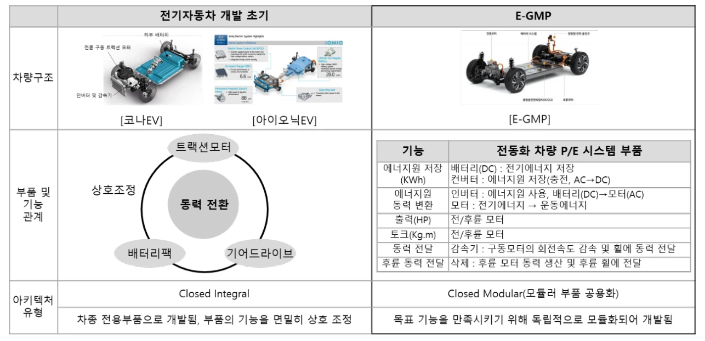
<출처> 현대자동차 차량 설명 자료 기반 직접 작성
현대자동차의 경우 전기자동차 개발 초기 Closed Integral 아키텍처에서 E-GMP 개발을 통해 Closed Modular 아키텍처로 발전한 사례이다. E-GMP 등장 이전전기자동차 초기 모델인 ‘코나 EV’ 및 ‘아이오닉 EV’와 E-GMP 의 구조를 비교해보면 E- GMP 등장 이전의 경우 핵심 부품들이 차종 별 전용 부품으로 개발되었을 뿐만 아니라차량 구조의 통일성을 확인할 수 없다. 따라서 차종 별 공용화가 아닌 각 차종 내 부품기능들을 면밀하게 상호 조정하는 것이 중요하다.
하지만 E-GMP 가 적용되어 P/E 시스템을 구성한 현대차 부품 레이아웃의 경우, 모듈러 부품들을 공용화 하는 목적으로 개발되었기 때문에 차종이 아닌 각 주요부품별로 목표 기능을 만족시키기 위하여 독립적으로 모듈화 되어 개발되는 것에집중하였다. 그 결과로 E-GMP 가 적용된 이후 차량 레이아웃은 ‘테슬라’의 전기자동차 P/E 시스템 부품 레이아웃, ‘폭스바겐’의 ‘MEB’ 플랫폼, ‘GM’의 ‘얼티엄’ 플랫폼과유사한 구조를 가지고 있음을 확인할 수 있다. 결론적으로 E-GMP 의 개발 이전 이후의가장 큰 차이점은 P/E 시스템을 구성하는 부품들의 모듈화(공용화)를 통한 레이아웃통일 구성이라고 할 수 있으며 E-GMP 개발 통해 현대자동차의 전동화 차량 구성은 Closed Modular 아키텍처로 발전하게 되었다.
4.4 혁신 전략 2: 그룹사 R&D 역량 활용한 P/E 핵심 부품 모듈화 및 공용화 전략
현대자동차는 현대자동차그룹사 내 계열사들의 R&D 역량을 활용하여 파워 일렉트릭시스템 (이하 P/E 시스템)의 핵심 부품들의 모듈화 및 공용화 전략을 펼치고 있다. 현대자동차가 공개한 E-GMP 의 구조적 특징 분석과 더불어 현대모비스의 부품 검색을통해 P/E 시스템을 구성하는 핵심 부품의 공용화(모듈화) 여부가 확인 가능하다. 해당방식을 바탕으로 현대자동차의 아키텍처 혁신 전략의 2 번째 항목인 전동화 차량 핵심
부품 모듈화 및 공용화 전략에 대한 분석 및 실증을 실시한다.
4.4.1 E-GMP BMS(Battery Management System) 계열사 간 부품 “
모듈화” 및 “차량 별 공용화” 전략
현대자동차는 E-GMP 플랫폼의 부품 구조 전개를 고려해 ‘배터리 셀’과 ‘배터리 모듈’ 을 1 종으로 표준화해 개발했다. 배터리 설계 표준화를 통해 배터리 모듈 수를 더하거나뺌으로써 차종 별 요구되는 배터리 용량 성능을 만족할 수 있도록 설계 유연성을확보했다. E-GMP 의 배터리 모듈 수를 보면 24 개의 모듈이 들어간 모델과 32 개의모듈이 들어간 모델을 확인할 수 있는데, 각 배터리 모듈은 ‘Protection cover’, ‘Cooling channel’, ‘Lower cover’와 함께 결합되어 ‘BMS(Battery Management System)’을 구성한다.
<그림 21> 배터리 모듈 및 BMS 예시
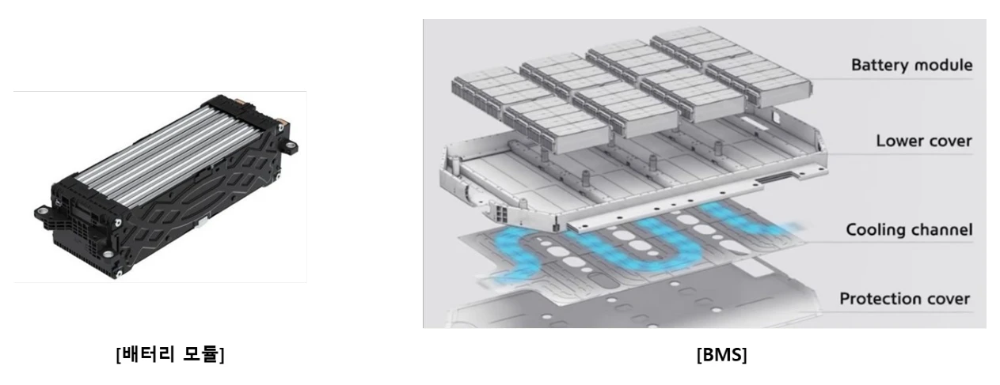
<출처> 현대자동차 그룹 테크 (https://tech.hyundaimotorgroup.com/kr/) E-GMP 차량의 전기에너지는 ‘배터리 모듈’ 수로 결정된다. E-GMP 시스템에탑재되는 ‘배터리 셀’과 ‘배터리 모듈’의 경우 모두 표준화 되어있기 때문에 ‘배터리 모듈’ 패키징을 위한 부품인 ‘Protection cover’, ‘Cooling channel’, ‘Lower cover’에변화가 있을 것으로 짐작된다. ‘BMS’의 경우 전기자동차 배터리 성능을 결정하는 ‘ 배터리 모듈’의 수로 분류했으며 분류 결과 총 ‘24 개’의 배터리 모듈이 사용된 ‘1 번’ 유형과 총 32 개의 ‘배터리 모듈’이 사용된 ‘2 번’ 유형으로 분류된다. 분류된 각 유형의배터리 가격은 유형별로 동일하다.
성능적 측면에서는 ‘1 번’ 유형의 경우 58KWh 의 전력을 저장할 수 있으며, ‘2 번’ 유형의 경우 77.4KWh 의 전력을 저장할 수 있다. 현재 E-GMP 배터리 셀의 경우 모두 ‘SK 온’에서 공급하고 있으며, ‘23 년부터 ‘아이오닉 6’에 들어가는 배터리 셀은 ‘LG 에너지솔루션’이 공급하기로 예정되어 있다.
배터리 팩의 경우 차량의 형상 및 공장 컨디션 별로 배터리 패키징에 변화가 있을것으로 사료되나 공용화 사용 중이며, 배터리 품번 및 가격, 모듈 수 기준으로 실증한결과 예시로 현대차 아이오닉 5 스탠다드 옵션과 기아차 EV6 스탠다드 옵션 차종이동일한 배터리 모듈을 적용하고 있다고 예상할 수 있다.
<표 7> BMS 아키텍처 유형 분류
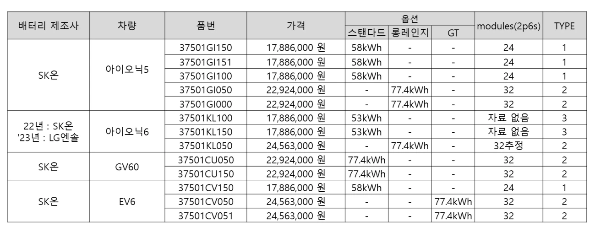
<출처> 현대모비스 부품 조회 서비스 검색 자료 참고 직접 작성
4.4.2 전기차 전용 통합 충전 시스템(ICCU: Integrated Charging Control
Unit’) 계열사 간 부품 “모듈화” 및 “차량 별 공용화” 전략
ICCU 는 전기자동차의 충전을 위해 교류(AC)를 직류(DC)로 변환해 주는 기능을가지고 있는 장치인 ‘OBC(On Board Charger)’ 장치와 차량에 저장된 전기에너지의전압을 12V 로 낮추어 전기에너지를 공급시킬 수 있는 기능을 가지고 있는 ‘LDC(Low Voltage DC-DC Converter)’ 장치가 통합된 제품으로서 현대자동차의 E-GMP 차량의 ‘V2L(Vehicle to Load)’ 기능을 가능하게 하는 장치이다. 해당 장치를 통해외부의 전력을 차량에 충전하는 것은 물론 차량의 전력을 외부에 공급할 수 있다. 해당장치의 최종 제조는 현대모비스가 담당하고 있고, ICCU 의 핵심 부품은 ‘인팩’에서 ICCU 를 구성하는 4 가지의 ‘PCB 어셈블리’를 공급하고 있다. 현대모비스의 부품검색을 통해 ICCU 부품을 조사했을 때 서로 다른 부품 번호를가지고 있는 것을 확인했지만, 형성하고 있는 가격은 같은 것을 알 수 있다. ICCU 를구성하는 핵심 부품인 4 가지 ‘PCB 어셈블리’를 ‘인팩’에서 모두 공급한다는 점, 같은모든 ICCU 가 같은 가격을 형성하고 있다는 점을 바탕으로 ICCU 의 요구 기능 및필요한 핵심 부품이 모두 같다는 것과 패키징 등 마이너한 부분의 변화로 인한 부품번호가 다를 것으로 짐작되기 때문에 ICCU 를 공용화하는 전략을 쓰고 있는 것을 알 수있다.
<표 8> ICCU 아키텍처 유형 분류
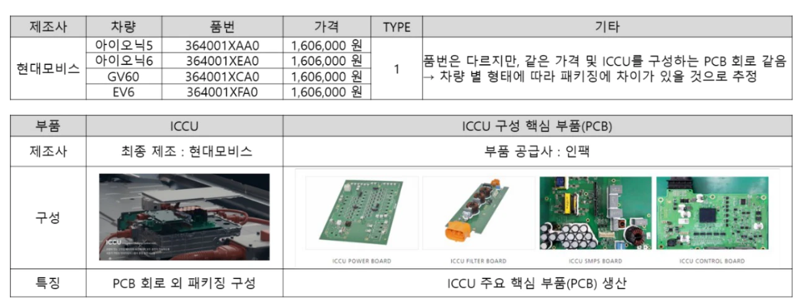
<출처> 현대모비스 부품 조회 서비스 검색 자료 참고 및 주식회사 인팩 홈페이지 참고 직접 작성
4.4.3 전기차 전용 드라이브 유니트(모터/인버터/감속기 통합 부품) “통합 모듈화”
및 “차량 별 공용화” 전략
E-GMP 의 드라이브 유니트 부품은 원래 서로 다른 부품이었던 ‘전기모터’, ‘감속기’, ‘인버터’를 하나로 통합한 부품이다. 부품 통합을 통해 부품 장착에 필요한 공간이줄어들었고, 이로 인해 P/E 시스템을 적용할 때 조립 공간 확보를 위한 최적화 설계가가능하다. 부품 부피 축소로 인해 차체 앞쪽의 적재 공간인 프렁크를 위한 공간을확보할 수 있고 높아진 공간 활용성으로 배터리 장착 공간을 확보할 수 있다. 드라이브 유니트 부품 유형은 현대모비스에서 제공하는 부품 번호로 분류했다. 부품번호로 분류했을 때 ‘아이오닉 5’ ‘GV60’, ‘EV6’ 총 3 개의 차종이 ‘1 번’ 후륜 드라이브유니트 타입을 적용했음을 알 수 있고, 전륜 드라이브 유니트의 경우 ‘아이오닉 5’, ‘EV6’ 총 2 개의 차종이 ‘1 번’ 전륜 드라이브 유니트를 적용했음을 알 수 있다. 총 11 개의 전륜, 후륜 드라이브 유니트 조사 결과 전륜 드라이브 유니트의 경우 3 가지의아키텍처 타입이 사용된 것을 확인할 수 있고, 후륜 드라이브 유니트의 경우 2 가지의아키텍처 유형이 사용된 것을 확인할 수 있다. E-GMP 차량의 기본 옵션은 후륜구동이기 때문에, 후륜 ‘1 번’ 후륜 드라이브 유니트가 가장 많이 공용화 되고 있음을짐작할 수 있다.
‘아이오닉 6’ 및 ‘GV60’의 경우 전용 부품 번호를 가지고 있는 드라이브 유니트타입을 ‘가격’으로 분류했는데, 다른 타입의 드라이브 유니트와 같은 가격을 형성한것으로 미루어 보았을 때 부품의 장착을 위한 패키징 부분에서의 차이점으로 인해 부품번호가 다를 것으로 짐작된다. 따라서 모듈화 된 부품을 다수 차종에서 공용화하며차량 장착 마운팅 포인트 정도만 변경됐을 것으로 추측할 수 있으며 예시로 아이오닉 5, EV6, GV60 의 경우 기본 옵션 채택 시 동일한 ‘REAR TYPE 1 모듈’ 적용하고 있음을 알
수 있다.
<표 9> 드라이브 유니트의 아키텍처 유형 분류
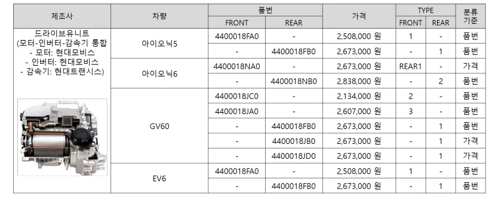
<출처> 현대모비스 부품 조회 서비스 검색 자료 참고 직접 작성
4.5 혁신 전략 3: E-GMP 플랫폼 P/E 시스템 확장성을 위한 플랫폼 인터페이스 설계
현대자동차의 E-GMP 플랫폼은 Closed Modular 형태의 아키텍처를 채택하고 있다. 이는 고정 영역과 변동 영역으로 명확하게 구분되어 있어, 디자인 및 차종에 따라별도의 사양을 적용할 수 있는 특징을 지니고 있다. Closed Modular 아키텍처는플랫폼의 구조를 일정 부분까지는 고정된 형태로 유지하면서, 다른 부분에 대해서는변경이 가능하도록 설계된 것을 의미한다.
이 중에서도 플랫폼의 고정 영역은 차량의 핵심적인 부품이나 시스템이 배치되는영역으로, 일반적으로 플랫폼 전체를 통틀어 동일한 구조를 유지한다. 그러나 변동영역은 차량의 길이, 디자인 등과 같이 차종마다 다르게 조정될 수 있는 부분을지칭하며 유연성을 가진다.
고정 영역을 제외한 변동 영역에서는 각 차종에 맞게 별도의 사양이 적용될 수 있다. 이는 차량의 길이, 디자인 등을 차종 별로 다르게 설정할 수 있음을 의미하며, 이러한유연성은 다양한 차종을 개발하고 라인업을 확장하는 데 기여하고 있다. 결국, 현대자동차는 E-GMP 플랫폼 기반으로 인터페이스를 설계하는 전략을 통해 다양한시장 요구에 빠르게 대응하면서도 기술적인 효율성을 유지할 수 있었다.
<그림 22> E-GMP 의 모듈화 특성
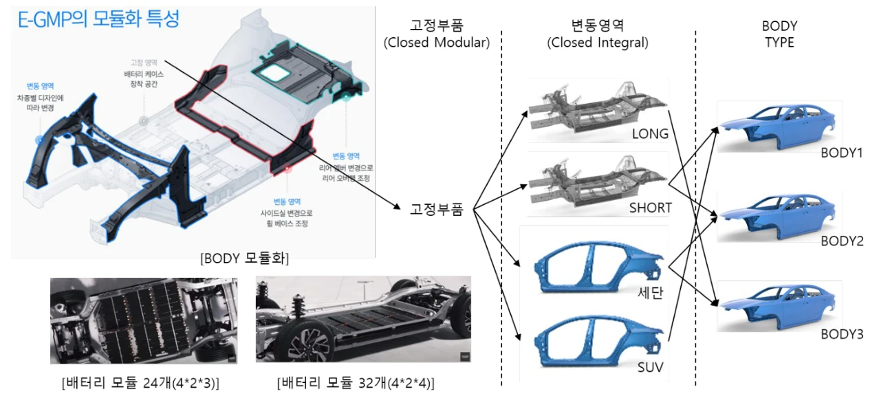
<출처> 현대자동차 차량 설명 자료 기반 직접 작성
예시를 들어 자세히 설명하자면, E-GMP 의 경우 변동 영역인 실사이드 변경을 통한차량의 휠 베이스가 조정이 가능한데, 휠 베이스 조정을 통해 차량의 주행 거리와 가장밀접한 관련이 있는 전기에너지 저장을 위한 배터리 공간 조정의 유연성 확보가가능하다. E-GMP 가 적용된 차량은 차종 별, 옵션 별 유형에 따라 BMS(Battery Management System)’에 필요한 배터리 모듈 수가 달라지게 되며, E-GMP 에적용된 차량의 ‘BMS’를 구성하는 배터리 모듈은 24 개 혹은 32 개 타입으로 분류된다. 예를 들어 타입 별 ‘BMS’의 배터리 모듈 수에 따라 배터리 장착을 위해 필요한 공간이서로 다름에도 불구하고 휠 베이스 조정을 통해 배터리 공간 마련을 위한 대응이가능하다. ‘E-GMP 모듈화 특성’을 보면 P/E 시스템 구성에 필요한 ‘BMS(Battery Management System)’ 모듈 뿐 아니라 드라이브 유니트 등 부품의 장착에 필요한공간들이 확보된 것을 확인할 수 있다.
<그림 23> E-GMP 가변적 특성에 따른 배터리 모듈 수 변화 예시
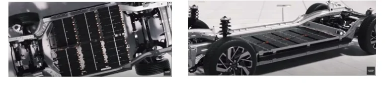
<출처> 현대자동차 유튜브 채널
4.6 혁신 결과: 핵심 P/E 부품 모듈화 및 공용화 기반 “개발 비용” 및 “생산 원가＂절감
결론적으로 현대자동차 아키텍처 전략을 종합하여 살펴보면 계열사에서 개발한부품 간 모듈화 및 최대 공용화가 이루어지고 있다는 것을 알 수 있다. 차량 타입 별배터리, 드라이브 유니트, ICCU 의 부품 조합을 통해 하나의 P/E 시스템이 만들어지며예를 들면 ‘TYPE1’ 배터리, ‘TYPE1’의 드라이브 유니트, ‘TYPE1’의 ICCU 가 조합될경우 ‘아이오닉 5’의 기본 옵션 사양을 만족하는 P/E 시스템이 구성된다. 또한현대자동차는 E-GMP 개발을 통해 P/E 시스템을 구성하는 핵심 부품들의 장착을 위한 ‘Interface’를 개발했고 그 결과로 E-GMP 의 고정영역 및 변동영역을 통한 차급 별설계 유연성 확보와 더불어 차량 요구 성능을 만족시킬 수 있는 P/E 핵심 부품인드라이브 유니트, ‘BMS(Battery Management System)’ 부품의 성능 별 선택적조합이 가능해졌다.
이런 아키텍처 혁신으로 E-GMP 에 필요한 핵심 부품들과 전기자동차 플랫폼의아키텍처는 ‘Closed Modular’ 아키텍처 유형으로 개발되었으며, 이러한 아키텍처특성으로 인해 현대자동차, 제네시스, 기아자동차의 전기자동차를 구성하는 핵심부품들의 공용화가 가능 해졌다. 이러한 모듈화와 공용화의 특성은 개발 과정에서의비용 효율성을 증대시키면서도, 더욱 중요한 것은 다양한 차종에 대해 신속하게 동력계시스템을 개발하고 적용할 수 있는 유연성을 제공한다. 이는 미래 지향적인 모빌리티시장에서 다양한 고객 요구와 기술적인 변화에 대응하기 위한 효과적인 수단으로작용하고 있으며, 이와 같은 혁신적인 계열사간 모듈화 및 공용화 시스템 구성은 개발비용과 시간을 대폭 절감시키며 전동화 차량 동력계 시스템의 개발과 제조에적극적으로 기여하고 있다.
<그림 24> 현대자동차 P/E 시스템 아키텍처 전략
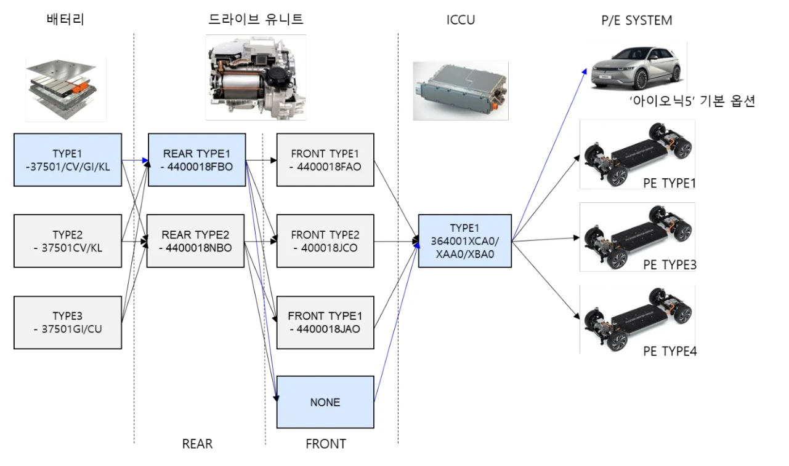
<출처> 현대모비스 부품 조회 서비스 검색 자료 참고 직접 작성
제 5 장 혁신전략 3. 상품성 혁신: 디자인 혁신 전략
5.1 혁신 배경: 2010 년도 중-후반 현대차 순이익률 완성차 업계 최저 수준 기록
2010 년 중-후반을 기준으로 현대차의 순이익률은 완성차 업계에서 최저 수준에위치해 있었다. 이는 경쟁사들과 비교했을 때 현대차가 고객에게 전달할 수 있는가치의 부재를 시사하는 지표로 받아들여졌으며 이런 경제적인 도전에 직면한현대차는 차별화된 경쟁력을 확보하고 차량에 높은 가치를 부여하기 위해 혁신적인전략이 필요하다고 판단하였다. 경쟁사 대비 고객에게 전달할 수 있는 “고부가 가치창출＂기반 Value 의 극대화를 위하여 현대자동차는 완성차의 “디자인”이 가지는중요한 가치에 주목하였고 이에 따라 현대차는 상품성 혁신의 일환으로 "디자인 혁신전략"을 도입했다.
<그림 25> 주요 글로벌 완성차 순이익률 추이
출처: 네이버 증권 회사 별 재무 지표 참조하여 작성
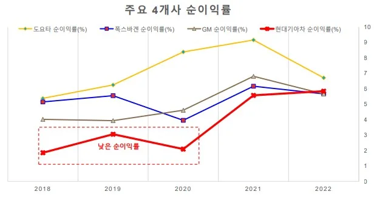
5.2 혁신 전략: 현대차 디자인 혁신을 통한 상품가치 향상
앞서 언급하였듯이 차량의 디자인은 자동차의 주요 상품성 중 하나이다. 현대자동차는 글로벌 Top 디자인 인재를 영입하여 내/외관 디자인에 혁신적인방향성을 부여하고, 차량의 고유성을 결정하는 IIIO 아키텍처에 주력한 파츠 부품의개발을 위해 적극적으로 투자하는 전략을 추진하고 있다.
우선 현대차는 글로벌 Top 디자인 인재를 영입하여 차량의 혁신적인 디자인 컨셉을통해 브랜드 이미지를 강화하고 차량의 시각적 독창성을 강조하며, 소비자들에게 강한인상을 남기고자 하는 전략을 펼치고 있다. 또한 IIIO 아키텍처 특성을 고려하여
차종마다 다르게 작용하는 파츠 부품들에 대한 개별적인 개발 투자를 적극적으로추진하고 있다. 이를 통해 차량의 고유성과 차종 간의 디자인 차별화를 강조하는 데에중점을 두고 있다. 고난이도의 디자인 파츠 개발에 대한 적극적 투자는 차량의디자인에서 더 높은 수준의 차별성을 창출하고 소비자들에게 현대차의 브랜드이미지를 더욱 강력하게 전달하는 역할을 한다.
내장, 외장 디자인의 경우 차량의 고유성에 따라 통합적인 설계 및 제작이이루어지게 되므로, ‘Closed Integral’한 아키텍처 유형에 속한다. 전기자동차의 핵심부품인 P/E 시스템의 구성 부품과 E-GMP 를 ‘Closed Modular’ 아키텍처 유형으로개발하여 전기자동차 개발 시 부품 공용화를 통해 차량 개발에 필요한 연구개발비용의절감, 연구기간 단축, 제조비용 절감의 효과를 노렸다면, 차량의 고유성 확보를 위한내장 외장 디자인류 부품들의 경우 ‘Closed Integral’한 아키텍처 유형으로개발함으로써 차량의 디자인 완성도를 확보할 수 있다.
<그림 26> 현대자동차 아이오닉 5 외장 디자인류 부품 예시
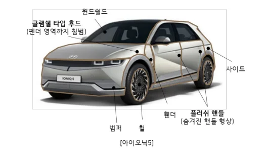
<출처> 현대자동차 아이오닉 5 이미지 기준 직접 작성
차량의 외장 디자인을 구성하는 주요 부품으로는 ‘후드’, ‘범퍼’, ‘도어’, ‘사이드’, ‘ 트렁크’, ‘펜더’, ‘휠’ 및 ‘가니쉬’류 부품 등이 있고, 외장 부품들은 차량의 바디에통합적으로 장착됨으로써 차량 고유의 외장 디자인을 형성한다. 최근 현대차에서출시하고 있는 전동화 차량의 주요 특징으로, ‘플러시 핸들’타입의 도어가 적용되어미래 지향적인 디자인을 갖추고 있으며, ‘클램쉘 후드’ 타입의 후드를 적용하여고급감을 더하고 있다.
‘플러시 핸들’의 경우 도어 핸들부가 숨겨져 있는 타입의 도어를 뜻하며, 기존 도어대비 핸들부에 장착될 부품의 설계와 더불어 핸들부의 간격 및 단차를 맞춰야 하는 등제조 난이도가 높은 유형이다. 또한, 클램쉘 후드의 경우 조기 껍데기 모양을 하고 있는후드로, 좌우 폭이 확대되어 기존 펜더가 영역의 일부를 후드가 덮는 형상을 가지고
있다. 클램쉘 후드 또한 제조 난이도가 높기 때문에, 주로 고급차에 사용되는 옵션이다. 현대자동차의 전기자동차는 ‘Closed Integral’ 아키텍처 유형인 외장 디자인에서 주로글로벌 럭셔리 차종에 적용되었던 디자인 요소들을 적극적으로 적용함으로써 높은디자인 완성도를 확보하고, 이를 통해 전기자동차의 고부가가치를 형성하고 있다.
<표 10> 차종 별 디자인 요소 예시
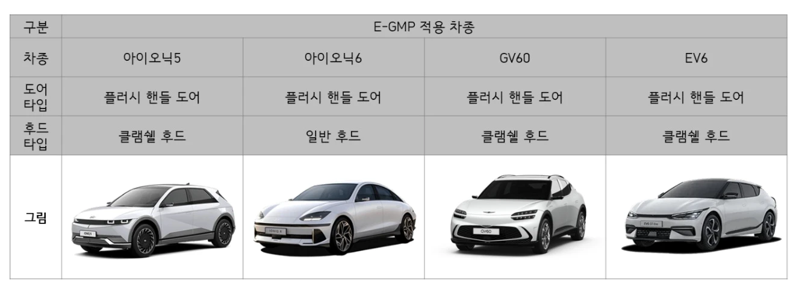
<출처> 현대자동차 E-GMP 자동차 이미지 사용, 직접 작성
5.3 혁신 결과: 글로벌 디자인 어워드 최다 수상 등 상품 가치 및 경쟁력 대폭 향상
현대차는 디자인 혁신 전략을 통해 글로벌 주요 디자인 어워드에서 최다 수상을기록하며 디자인 적인 상품 가치 향상을 인정받고 있다. 2023 년에는 World Car of the Year 디자인 부문에서 아이오닉 6 이 수상함으로써 세계적인 차량 디자인의최정점에 올랐으며 또한, 레드 닷 디자인 어워드에서는 7 개의 본상 중 Car Design 부문에서 그랜저가 수상하는 등 높은 평가를 받았다.
이러한 수상 경험은 차량을 구매하는 고객들로 하여금 경쟁사 대비 높은 디자인적, 상품적 가치를 제공하고 있음을 시사한다. 현대자동차의 혁신적인 디자인은소비자들에게 강력한 시각적 인상을 남기며, 브랜드의 긍정적인 이미지를 형성하는 데큰 역할을 하고 있다. 추가적으로, 이러한 상품 가치의 향상은 브랜드의 명성을증진시켜 현대차의 글로벌 시장에서의 입지를 더욱 굳건히 하는 데 기여하고 있다.
<그림 27> 현대자동차 2023 디자인 어워드 수상 내역
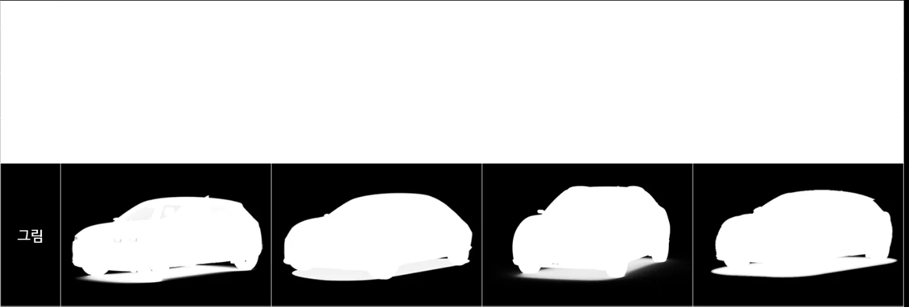
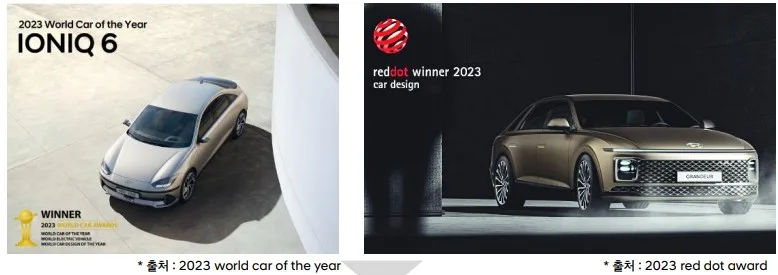
제 6 장 결론 및 시사점
6.1 결론
본 연구를 통해 현대자동차는 성공적인 전동화 전환을 이루기 위해 다양한 핵심역량과 혁신 전략을 결합하여 실행함으로써 글로벌 완성차 시장에서의 급격한 성장을이끌어냈다는 것을 알 수 있다. 핵심 역량 측면에서는 제조-설계 간 독보적 협업시스템을 기반으로 한 제조 역량을 보유하고 있고, 현대자동차 그룹사 차원의 주요전동화 부품 자체 설계와 개발에 탁월한 역량을 가지고 있다. 또한 글로벌 최고 수준의인재를 영입하고 조직을 확대하여 디자인 역량을 강화했다.
이런 핵심 역량들을 바탕으로 현대자동차는 혁신 전략들을 추진하였다. 우선 제조혁신 측면에서 현대자동차는 내연기관에서 전동화 차량으로의 혼류 생산 전략을수립하였다. 이는 내연기관과 전동화 차량의 혼성 생산을 통해 비용 효율성을 높이고, 생산 라인업 확장성을 증대하는 동시에 신규 설비 구축 비용을 절감함으로써 신차의다량 양산을 지원하였다. 또한 그룹사 차원에서 주요 전동화 부품을 자체 설계하고개발하여 모듈러 아키텍처 형태의 부품 개발과 공용화 전략을 추진하였다. 이를기반으로 규모의 경제를 통한 제품 자체 비용 및 개발 비용을 절감할 수 있었고 부품의표준화와 유연성을 동시에 추구하여 차종 간의 효율적인 자원 활용을 이루어 냈다. 마지막으로 현대자동차는 혁신적 디자인 전략을 통해 차량의 외관과 내부 디자인에서독창성을 강조하며 브랜드의 상품적 가치를 대폭 향상하는 전략을 추진하였다. 그리고이러한 혁신 결과는 최종적으로 수익의 극대화를 실현하였다.
따라서, ‘현대자동차는 어떤 핵심 역량으로 내연 기관에서 전동화 차량 시장으로급격한 전환을 성공하였고 어떤 혁신 전략으로 타 글로벌 완성차 전통 강자 대비 급격한성장을 이룰 수 있었는가?’라는 본 연구의 Research Question 에 대한 결론은 강력한핵심 역량과 이를 활용한 혁신 전략의 수립과 실행을 통해 성공적인 전동화 전환을이루어냄으로써 글로벌 시장에서의 성장을 성취하였다고 할 수 있다. 현대자동차는제조의 혁신, 모듈러 아키텍처 혁신, 디자인 혁신을 통하여 비용을 절감하고 상품가치를 향상함으로써 최종적으로는 Profit 의 극대화를 실현하였다. 그리고현대자동차의 이러한 혁신 경험은 차량 산업의 미래를 선도하는 데 기여하며, 현대자동차가 지속적으로 성장할 수 있는 모멘텀을 갖고 있음을 보여준다.
<그림 28> 현대자동차 전기차 전환 혁신 요약
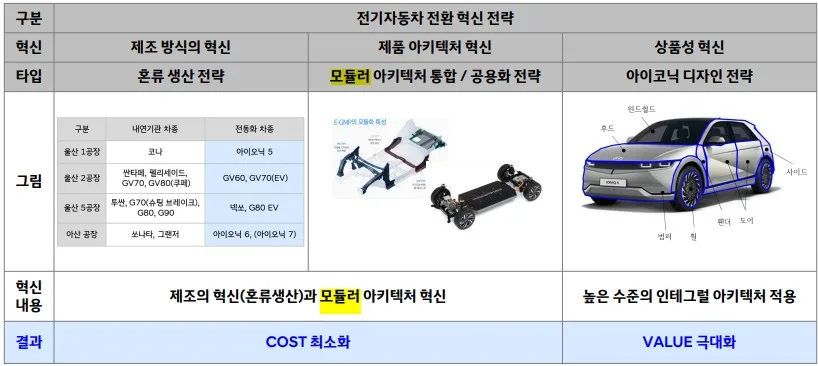
<출처> 직접 작성
6.2 시사점
<그림 29> Research Question 결론 기반 비즈니스 캔버스 모델
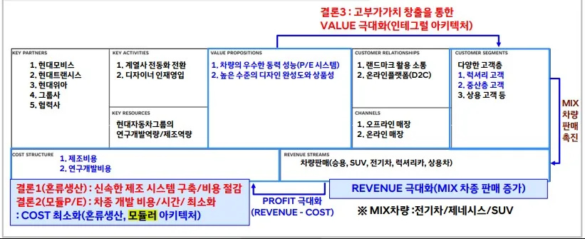
<출처> 직접 작성
6.2.1 시사점 1: 핵심 부품 기술 개발 역량 확대 요구
자동차 제조 강국인 대한민국의 대표 자동차 제조 기업인 현대자동차의 실적은 곧대한민국의 국가 기술 경쟁력과도 직결되는 문제이다. 전기자동차는 내연기관 자동차대비 부품 수가 줄어들고, 부품의 크기 축소 및 간소화가 되었기 때문에 전기자동차의 P/E 시스템은 내연기관 차량의 P/T 시스템 대비 인터페이스가 단순화됐다. 이는 곧자동차 동력 전환계 부품들의 모듈러 적인 특징이 부각되고 있다는 것을 의미한다. ‘ 전기모터’, ‘감속기’, 배터리 등은 ‘IIMO(Integral Inside-Modular Outside)’ 아키텍처유형에 속하는 부품들로 인터그럴한 설계를 통해 핵심 기술 및 제조 기술을 확보해야
함과 동시에 부품의 모듈화를 통해 범용성을 확보해야 하는 아키텍처 유형이다. 범용성이 높아 여러 장점이 있는 ‘Closed Modular’ 아키텍처 유형의 제품은 때로는경쟁력 상실의 원인이 되기도 한다. 현재 현대자동차의 E-GMP 에 장착되는 핵심부품들의 경우 ‘헤어핀 권선 모터’ 및 ‘디스 커넥터 장치’가 결합된 감속기 등기술경쟁력을 보유하고 있지만, 만약 출력(Hp), 토크(Kg.m), 전기자동차의 연비인전비 등 전기동차의 주요 상품성 지표를 결정하는 핵심 부품인 ‘전기모터’, ‘감속기’ 등핵심 부품들의 기술 경쟁에 뒤쳐질 경우, 전기자동차 차량 전체의 성능이 저하되고, 이는 곧 전기자동차의 상품성 저하 및 개발 경쟁력 저하를 의미한다. 따라서 다른전기자동차 업체와 경쟁하기 위해 요구되는 성능의 핵심 부품들을 글로벌 자동차 부품기업으로부터 ‘Open Modular’ 유형의 아키텍처 타입을 갖는 부품들을 모듈 단위로공급받아 E-GMP 에 적용하게 되는 것이 불가피하게 되는 경우가 발생한다면, 현대자동차는 글로벌 완성차 제조업체가 아닌 단순히 자동차 기업으로 전락할 수 있다따라서 대한민국 자동차 개발 및 제조 경쟁력 확보를 위해 국가와 기업 모두전기자동차의 핵심 부품들에 대해 Integral 한 개발 역량을 갖추고 고유의 기술경쟁력을 확보하기 위한 노력을 지속해야 한다.
6.2.2 시사점 2: 핵심역량을 최대한 활용한 혁신 전략 수립 및 실행 필요
파괴적 혁신은 해당 산업의 메인 스트림을 바꾸고, 이에 민첩하게 대응하지 못한기업들은 도태와 몰락을 피할 수 없다. 본 연구 사례를 미루어 보았을 때, 급격히발전하는 기술과 더불어 급변하는 시장 변화에 성공적으로 대응하기 위해서는 해당산업에 민첩하게 대응하기 위한 신속한 의사결정과 조직적인 지원이 요구된다. 또한시장에서 요구하는 기술과 상품적 가치를 충족시키기 위해 자사의 핵심 역량을정확하게 파악하고, 요구 기술과 상품적 가치를 충족시키기 위해 가장 효율적인 전략의수립과 실행이 필요하다. 현대자동차의 성공적인 전동화 차량으로의 전환 사례에서확인 가능한 ‘핵심역량을 활용한 혁신 전략 수립과 실행’이라는 단순 명료한 메시지는자동차 산업을 넘어 다양한 기술 산업 분야에서 패러다임 전환에 성공적으로 대응하기위한 기업의 생존 전략이자 성장의 발판이 될 수 있음을 의미한다.
Reference
[1] Fujimoto, T. (2018). A Design-Information-Flow View of Industries, Firms, and Sites.
[2] K. Ulrich (1995): “The Role of Product Architecture in the Manufacturing Firm”, Research Policy, 24, pp.419-440 [3] 코로나 이후 주요국의 전기차 시장 동향, 한국무역협회, ‘22 년 9 월 [4] xEV 배터리 하우징 산업 동향, 이동원 (한국과학기술정보연구원),